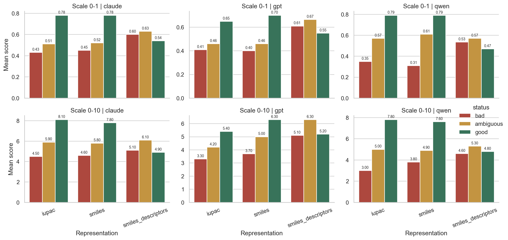
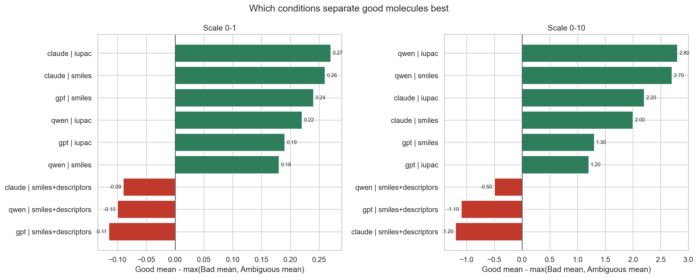
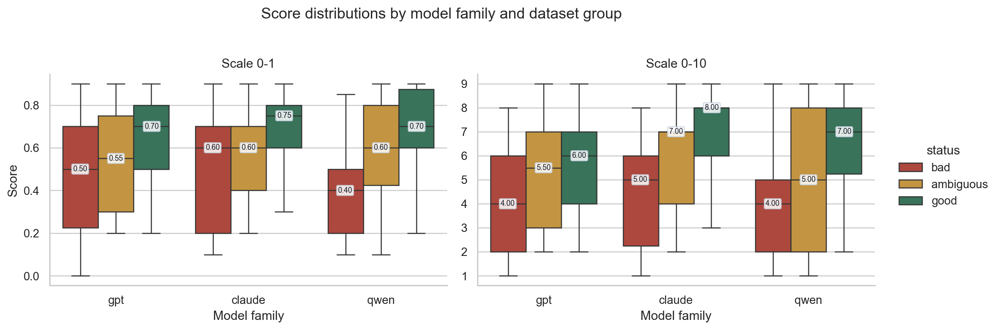

Score scales are kept as configured and compared separately. Higher separation means the condition assigns higher scores to good molecules than to both bad and ambiguous molecules within the same scale.



| status | experiment_id | model_family | model | representation | scale | condition | ambiguous | bad | good | good_minus_bad | good_minus_ambiguous | ordered_separation |
|---|---|---|---|---|---|---|---|---|---|---|---|---|
| claude_iupac_0_1 | claude | anthropic/claude-3-haiku | iupac | 0-1 | claude | iupac | 0-1 | 0.510 | 0.430 | 0.780 | 0.350 | 0.270 | 0.270 | |
| claude_smiles_0_1 | claude | anthropic/claude-3-haiku | smiles | 0-1 | claude | smiles | 0-1 | 0.520 | 0.450 | 0.780 | 0.330 | 0.260 | 0.260 | |
| gpt_smiles_0_1 | gpt | openai/gpt-4.1-nano | smiles | 0-1 | gpt | smiles | 0-1 | 0.460 | 0.400 | 0.700 | 0.300 | 0.240 | 0.240 | |
| qwen_iupac_0_1 | qwen | qwen/qwen3-14b | iupac | 0-1 | qwen | iupac | 0-1 | 0.570 | 0.350 | 0.790 | 0.440 | 0.220 | 0.220 | |
| gpt_iupac_0_1 | gpt | openai/gpt-4.1-nano | iupac | 0-1 | gpt | iupac | 0-1 | 0.460 | 0.410 | 0.650 | 0.240 | 0.190 | 0.190 | |
| qwen_smiles_0_1 | qwen | qwen/qwen3-14b | smiles | 0-1 | qwen | smiles | 0-1 | 0.610 | 0.310 | 0.790 | 0.480 | 0.180 | 0.180 | |
| claude_smiles_descriptors_0_1 | claude | anthropic/claude-3-haiku | smiles_descriptors | 0-1 | claude | smiles+descriptors | 0-1 | 0.630 | 0.600 | 0.540 | -0.060 | -0.090 | -0.090 | |
| qwen_smiles_descriptors_0_1 | qwen | qwen/qwen3-14b | smiles_descriptors | 0-1 | qwen | smiles+descriptors | 0-1 | 0.570 | 0.535 | 0.470 | -0.065 | -0.100 | -0.100 | |
| gpt_smiles_descriptors_0_1 | gpt | openai/gpt-4.1-nano | smiles_descriptors | 0-1 | gpt | smiles+descriptors | 0-1 | 0.665 | 0.610 | 0.550 | -0.060 | -0.115 | -0.115 | |
| qwen_iupac_0_10 | qwen | qwen/qwen3-14b | iupac | 0-10 | qwen | iupac | 0-10 | 5.000 | 3.000 | 7.800 | 4.800 | 2.800 | 2.800 | |
| qwen_smiles_0_10 | qwen | qwen/qwen3-14b | smiles | 0-10 | qwen | smiles | 0-10 | 4.900 | 3.800 | 7.600 | 3.800 | 2.700 | 2.700 | |
| claude_iupac_0_10 | claude | anthropic/claude-3-haiku | iupac | 0-10 | claude | iupac | 0-10 | 5.900 | 4.500 | 8.100 | 3.600 | 2.200 | 2.200 | |
| claude_smiles_0_10 | claude | anthropic/claude-3-haiku | smiles | 0-10 | claude | smiles | 0-10 | 5.800 | 4.600 | 7.800 | 3.200 | 2.000 | 2.000 | |
| gpt_smiles_0_10 | gpt | openai/gpt-4.1-nano | smiles | 0-10 | gpt | smiles | 0-10 | 5.000 | 3.700 | 6.300 | 2.600 | 1.300 | 1.300 | |
| gpt_iupac_0_10 | gpt | openai/gpt-4.1-nano | iupac | 0-10 | gpt | iupac | 0-10 | 4.200 | 3.300 | 5.400 | 2.100 | 1.200 | 1.200 | |
| qwen_smiles_descriptors_0_10 | qwen | qwen/qwen3-14b | smiles_descriptors | 0-10 | qwen | smiles+descriptors | 0-10 | 5.300 | 4.600 | 4.800 | 0.200 | -0.500 | -0.500 | |
| gpt_smiles_descriptors_0_10 | gpt | openai/gpt-4.1-nano | smiles_descriptors | 0-10 | gpt | smiles+descriptors | 0-10 | 6.300 | 5.100 | 5.200 | 0.100 | -1.100 | -1.100 | |
| claude_smiles_descriptors_0_10 | claude | anthropic/claude-3-haiku | smiles_descriptors | 0-10 | claude | smiles+descriptors | 0-10 | 6.100 | 5.100 | 4.900 | -0.200 | -1.200 | -1.200 |
| experiment_id | model_family | model | representation | scale | condition | status | n | mean_score | median_score | std_score | min_score | max_score |
|---|---|---|---|---|---|---|---|---|---|---|---|---|
| claude_iupac_0_1 | claude | anthropic/claude-3-haiku | iupac | 0-1 | claude | iupac | 0-1 | ambiguous | 10 | 0.510 | 0.500 | 0.213 | 0.200 | 0.800 |
| claude_iupac_0_1 | claude | anthropic/claude-3-haiku | iupac | 0-1 | claude | iupac | 0-1 | bad | 10 | 0.430 | 0.450 | 0.267 | 0.100 | 0.800 |
| claude_iupac_0_1 | claude | anthropic/claude-3-haiku | iupac | 0-1 | claude | iupac | 0-1 | good | 10 | 0.780 | 0.800 | 0.092 | 0.600 | 0.900 |
| claude_iupac_0_10 | claude | anthropic/claude-3-haiku | iupac | 0-10 | claude | iupac | 0-10 | ambiguous | 10 | 5.900 | 6.500 | 1.663 | 3.000 | 8.000 |
| claude_iupac_0_10 | claude | anthropic/claude-3-haiku | iupac | 0-10 | claude | iupac | 0-10 | bad | 10 | 4.500 | 5.000 | 2.799 | 1.000 | 8.000 |
| claude_iupac_0_10 | claude | anthropic/claude-3-haiku | iupac | 0-10 | claude | iupac | 0-10 | good | 10 | 8.100 | 8.000 | 0.876 | 6.000 | 9.000 |
| claude_smiles_0_1 | claude | anthropic/claude-3-haiku | smiles | 0-1 | claude | smiles | 0-1 | ambiguous | 10 | 0.520 | 0.500 | 0.204 | 0.200 | 0.800 |
| claude_smiles_0_1 | claude | anthropic/claude-3-haiku | smiles | 0-1 | claude | smiles | 0-1 | bad | 10 | 0.450 | 0.550 | 0.272 | 0.100 | 0.800 |
| claude_smiles_0_1 | claude | anthropic/claude-3-haiku | smiles | 0-1 | claude | smiles | 0-1 | good | 10 | 0.780 | 0.800 | 0.092 | 0.600 | 0.900 |
| claude_smiles_0_10 | claude | anthropic/claude-3-haiku | smiles | 0-10 | claude | smiles | 0-10 | ambiguous | 10 | 5.800 | 6.500 | 1.687 | 3.000 | 8.000 |
| claude_smiles_0_10 | claude | anthropic/claude-3-haiku | smiles | 0-10 | claude | smiles | 0-10 | bad | 10 | 4.600 | 5.500 | 2.413 | 1.000 | 8.000 |
| claude_smiles_0_10 | claude | anthropic/claude-3-haiku | smiles | 0-10 | claude | smiles | 0-10 | good | 10 | 7.800 | 8.000 | 0.919 | 6.000 | 9.000 |
| claude_smiles_descriptors_0_1 | claude | anthropic/claude-3-haiku | smiles_descriptors | 0-1 | claude | smiles+descriptors | 0-1 | ambiguous | 10 | 0.630 | 0.700 | 0.211 | 0.200 | 0.900 |
| claude_smiles_descriptors_0_1 | claude | anthropic/claude-3-haiku | smiles_descriptors | 0-1 | claude | smiles+descriptors | 0-1 | bad | 10 | 0.600 | 0.650 | 0.226 | 0.100 | 0.900 |
| claude_smiles_descriptors_0_1 | claude | anthropic/claude-3-haiku | smiles_descriptors | 0-1 | claude | smiles+descriptors | 0-1 | good | 10 | 0.540 | 0.500 | 0.158 | 0.300 | 0.800 |
| claude_smiles_descriptors_0_10 | claude | anthropic/claude-3-haiku | smiles_descriptors | 0-10 | claude | smiles+descriptors | 0-10 | ambiguous | 10 | 6.100 | 7.000 | 2.132 | 2.000 | 9.000 |
| claude_smiles_descriptors_0_10 | claude | anthropic/claude-3-haiku | smiles_descriptors | 0-10 | claude | smiles+descriptors | 0-10 | bad | 10 | 5.100 | 5.500 | 1.853 | 2.000 | 8.000 |
| claude_smiles_descriptors_0_10 | claude | anthropic/claude-3-haiku | smiles_descriptors | 0-10 | claude | smiles+descriptors | 0-10 | good | 10 | 4.900 | 5.000 | 1.595 | 3.000 | 7.000 |
| gpt_iupac_0_1 | gpt | openai/gpt-4.1-nano | iupac | 0-1 | gpt | iupac | 0-1 | ambiguous | 10 | 0.460 | 0.450 | 0.222 | 0.200 | 0.900 |
| gpt_iupac_0_1 | gpt | openai/gpt-4.1-nano | iupac | 0-1 | gpt | iupac | 0-1 | bad | 10 | 0.410 | 0.350 | 0.233 | 0.100 | 0.800 |
| gpt_iupac_0_1 | gpt | openai/gpt-4.1-nano | iupac | 0-1 | gpt | iupac | 0-1 | good | 10 | 0.650 | 0.650 | 0.196 | 0.400 | 0.900 |
| gpt_iupac_0_10 | gpt | openai/gpt-4.1-nano | iupac | 0-10 | gpt | iupac | 0-10 | ambiguous | 10 | 4.200 | 3.500 | 2.201 | 2.000 | 9.000 |
| gpt_iupac_0_10 | gpt | openai/gpt-4.1-nano | iupac | 0-10 | gpt | iupac | 0-10 | bad | 10 | 3.300 | 3.000 | 2.214 | 1.000 | 7.000 |
| gpt_iupac_0_10 | gpt | openai/gpt-4.1-nano | iupac | 0-10 | gpt | iupac | 0-10 | good | 10 | 5.400 | 5.500 | 2.119 | 2.000 | 8.000 |
| gpt_smiles_0_1 | gpt | openai/gpt-4.1-nano | smiles | 0-1 | gpt | smiles | 0-1 | ambiguous | 10 | 0.460 | 0.400 | 0.232 | 0.200 | 0.900 |
| gpt_smiles_0_1 | gpt | openai/gpt-4.1-nano | smiles | 0-1 | gpt | smiles | 0-1 | bad | 10 | 0.400 | 0.450 | 0.330 | 0.000 | 0.800 |
| gpt_smiles_0_1 | gpt | openai/gpt-4.1-nano | smiles | 0-1 | gpt | smiles | 0-1 | good | 10 | 0.700 | 0.700 | 0.141 | 0.400 | 0.900 |
| gpt_smiles_0_10 | gpt | openai/gpt-4.1-nano | smiles | 0-10 | gpt | smiles | 0-10 | ambiguous | 10 | 5.000 | 5.000 | 1.826 | 2.000 | 8.000 |
| gpt_smiles_0_10 | gpt | openai/gpt-4.1-nano | smiles | 0-10 | gpt | smiles | 0-10 | bad | 10 | 3.700 | 3.500 | 2.214 | 1.000 | 7.000 |
| gpt_smiles_0_10 | gpt | openai/gpt-4.1-nano | smiles | 0-10 | gpt | smiles | 0-10 | good | 10 | 6.300 | 7.000 | 2.003 | 3.000 | 9.000 |
| gpt_smiles_descriptors_0_1 | gpt | openai/gpt-4.1-nano | smiles_descriptors | 0-1 | gpt | smiles+descriptors | 0-1 | ambiguous | 10 | 0.665 | 0.750 | 0.224 | 0.300 | 0.900 |
| gpt_smiles_descriptors_0_1 | gpt | openai/gpt-4.1-nano | smiles_descriptors | 0-1 | gpt | smiles+descriptors | 0-1 | bad | 10 | 0.610 | 0.675 | 0.231 | 0.200 | 0.900 |
| gpt_smiles_descriptors_0_1 | gpt | openai/gpt-4.1-nano | smiles_descriptors | 0-1 | gpt | smiles+descriptors | 0-1 | good | 10 | 0.550 | 0.575 | 0.215 | 0.200 | 0.800 |
| gpt_smiles_descriptors_0_10 | gpt | openai/gpt-4.1-nano | smiles_descriptors | 0-10 | gpt | smiles+descriptors | 0-10 | ambiguous | 10 | 6.300 | 7.000 | 2.214 | 2.000 | 9.000 |
| gpt_smiles_descriptors_0_10 | gpt | openai/gpt-4.1-nano | smiles_descriptors | 0-10 | gpt | smiles+descriptors | 0-10 | bad | 10 | 5.100 | 5.500 | 1.853 | 2.000 | 8.000 |
| gpt_smiles_descriptors_0_10 | gpt | openai/gpt-4.1-nano | smiles_descriptors | 0-10 | gpt | smiles+descriptors | 0-10 | good | 10 | 5.200 | 4.500 | 1.619 | 3.000 | 7.000 |
| qwen_iupac_0_1 | qwen | qwen/qwen3-14b | iupac | 0-1 | qwen | iupac | 0-1 | ambiguous | 10 | 0.570 | 0.600 | 0.258 | 0.100 | 0.800 |
| qwen_iupac_0_1 | qwen | qwen/qwen3-14b | iupac | 0-1 | qwen | iupac | 0-1 | bad | 10 | 0.350 | 0.300 | 0.227 | 0.100 | 0.800 |
| qwen_iupac_0_1 | qwen | qwen/qwen3-14b | iupac | 0-1 | qwen | iupac | 0-1 | good | 10 | 0.790 | 0.800 | 0.110 | 0.600 | 0.900 |
| qwen_iupac_0_10 | qwen | qwen/qwen3-14b | iupac | 0-10 | qwen | iupac | 0-10 | ambiguous | 10 | 5.000 | 4.500 | 3.018 | 1.000 | 9.000 |
| qwen_iupac_0_10 | qwen | qwen/qwen3-14b | iupac | 0-10 | qwen | iupac | 0-10 | bad | 10 | 3.000 | 2.500 | 2.309 | 1.000 | 8.000 |
| qwen_iupac_0_10 | qwen | qwen/qwen3-14b | iupac | 0-10 | qwen | iupac | 0-10 | good | 10 | 7.800 | 8.000 | 1.398 | 5.000 | 9.000 |
| qwen_smiles_0_1 | qwen | qwen/qwen3-14b | smiles | 0-1 | qwen | smiles | 0-1 | ambiguous | 10 | 0.610 | 0.550 | 0.223 | 0.300 | 0.900 |
| qwen_smiles_0_1 | qwen | qwen/qwen3-14b | smiles | 0-1 | qwen | smiles | 0-1 | bad | 10 | 0.310 | 0.300 | 0.197 | 0.100 | 0.700 |
| qwen_smiles_0_1 | qwen | qwen/qwen3-14b | smiles | 0-1 | qwen | smiles | 0-1 | good | 10 | 0.790 | 0.800 | 0.120 | 0.600 | 0.900 |
| qwen_smiles_0_10 | qwen | qwen/qwen3-14b | smiles | 0-10 | qwen | smiles | 0-10 | ambiguous | 10 | 4.900 | 4.500 | 2.923 | 2.000 | 8.000 |
| qwen_smiles_0_10 | qwen | qwen/qwen3-14b | smiles | 0-10 | qwen | smiles | 0-10 | bad | 10 | 3.800 | 4.500 | 2.150 | 1.000 | 7.000 |
| qwen_smiles_0_10 | qwen | qwen/qwen3-14b | smiles | 0-10 | qwen | smiles | 0-10 | good | 10 | 7.600 | 8.000 | 1.265 | 5.000 | 9.000 |
| qwen_smiles_descriptors_0_1 | qwen | qwen/qwen3-14b | smiles_descriptors | 0-1 | qwen | smiles+descriptors | 0-1 | ambiguous | 10 | 0.570 | 0.600 | 0.237 | 0.100 | 0.850 |
| qwen_smiles_descriptors_0_1 | qwen | qwen/qwen3-14b | smiles_descriptors | 0-1 | qwen | smiles+descriptors | 0-1 | bad | 10 | 0.535 | 0.500 | 0.219 | 0.100 | 0.850 |
| qwen_smiles_descriptors_0_1 | qwen | qwen/qwen3-14b | smiles_descriptors | 0-1 | qwen | smiles+descriptors | 0-1 | good | 10 | 0.470 | 0.500 | 0.170 | 0.200 | 0.700 |
| qwen_smiles_descriptors_0_10 | qwen | qwen/qwen3-14b | smiles_descriptors | 0-10 | qwen | smiles+descriptors | 0-10 | ambiguous | 10 | 5.300 | 5.500 | 2.627 | 1.000 | 9.000 |
| qwen_smiles_descriptors_0_10 | qwen | qwen/qwen3-14b | smiles_descriptors | 0-10 | qwen | smiles+descriptors | 0-10 | bad | 10 | 4.600 | 4.500 | 2.459 | 1.000 | 9.000 |
| qwen_smiles_descriptors_0_10 | qwen | qwen/qwen3-14b | smiles_descriptors | 0-10 | qwen | smiles+descriptors | 0-10 | good | 10 | 4.800 | 5.000 | 1.751 | 2.000 | 7.000 |